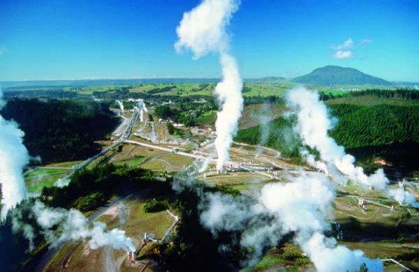
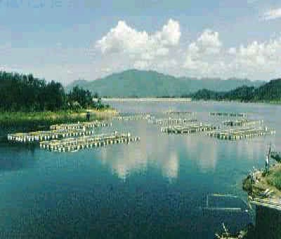

April 26, 2022
This is the first professional website about power system and its automation, and
also my first professional website. I will introduce the two directions of this major
from two projects respectively. Item1 is the power system project and Item2 is the
power electronics project.
电力系统的组成：由生产、输送、分配、消费电能的各种用电设备构成的统一整体。
将煤炭、石油或天然气等化石燃料燃烧所产生的热能转化为机械能以生产电能主要的能量转换设备包括锅炉、汽轮机与发电机组。
将水的机械能转化为电能。发电流程（能量转换过程）：水从高位向低位冲泻（势能—>动能）、水轮机带动发电机的转子旋转（动能—>电能）。
利用受控核裂变产生热能，将热能转化为机械能，再由机械能转化为电能。
除了热能的产生机理不同，核能发电与火力发电的热物理机制类似。
在妥善处理核废料的基础之上，核能发电是清洁的发电形式。
风力发电发展迅速：2005年以来，全球风电的装机容量每年递增25%，2017年全球累记540GW
目前中国是风电装机最大的国家，2017年装机188GW

太阳能的利用主要有三种形式：太阳能直接转化为热能、光伏电池发电、太阳能—热能—电能。
目前，太阳能发电的两种形式其能量转换效率都较低，直接转化为热能是较有前途的应用途径。
2018年光伏装机144GW。

地热发电是利用地下热水和蒸汽为动力源的一种新型发电技术。
其基本原理与火力发电类似，也是根据能量转换原理，首先把地热能转换为机械能，再把机械能转换为电能。

潮汐发电的工作原理与一般水力发电的原理是相近的，即在河口或海湾筑一条大坝，以形成天然水库，水轮发电机组就装在拦海大坝里。涨潮时使海水进人水库，落潮时利用水库与海面的潮差推动水轮发电机组。